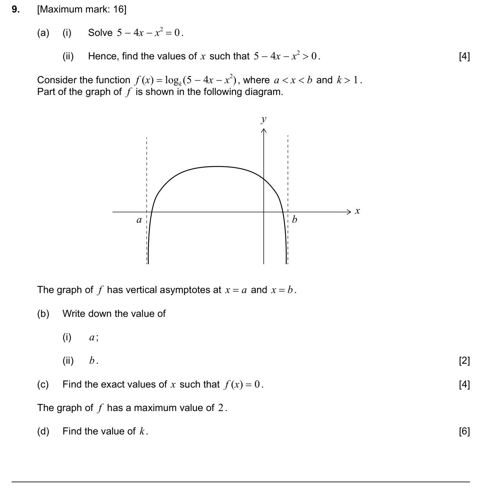
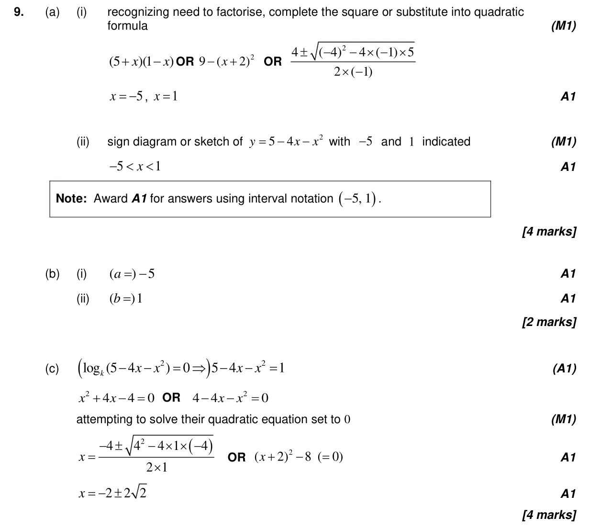
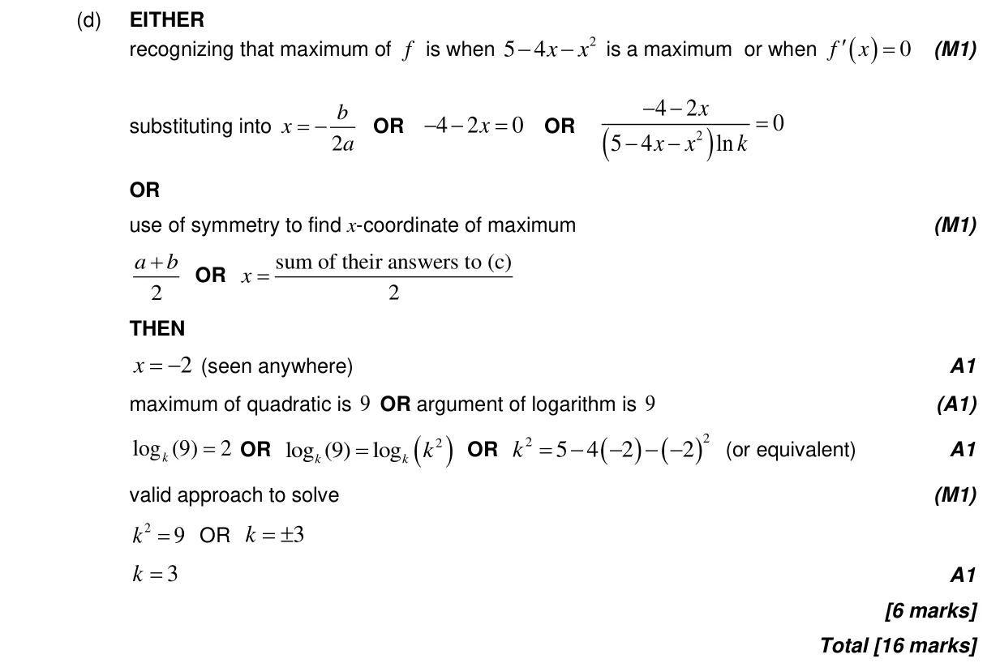

16 marks P1 TZ3 Section B No calculator 2.7 Solutions of quadratic equations and inequalities, discriminant and nature of roots1.5 Laws of exponents with integer exponents and introduction to logarithms2.6 Quadratic function2.9 Exponential and logarithmic functions2.4 Key features of graphs Question Hide breakdown abcd Markscheme 